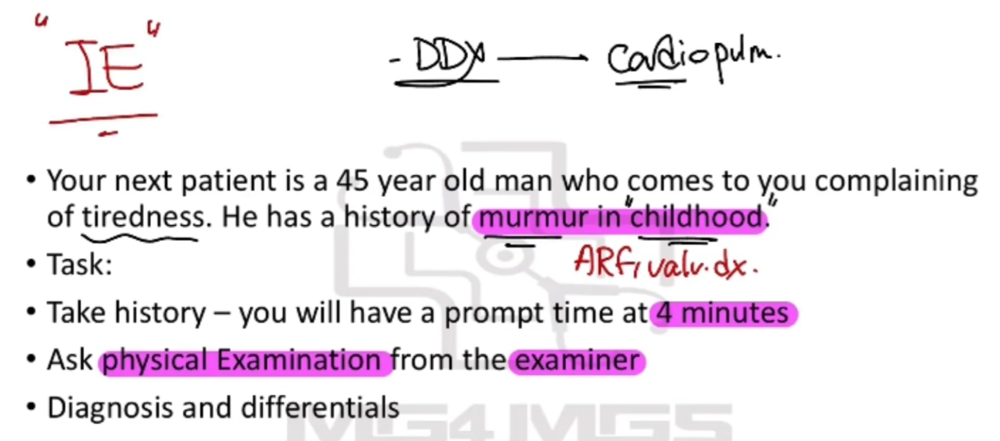
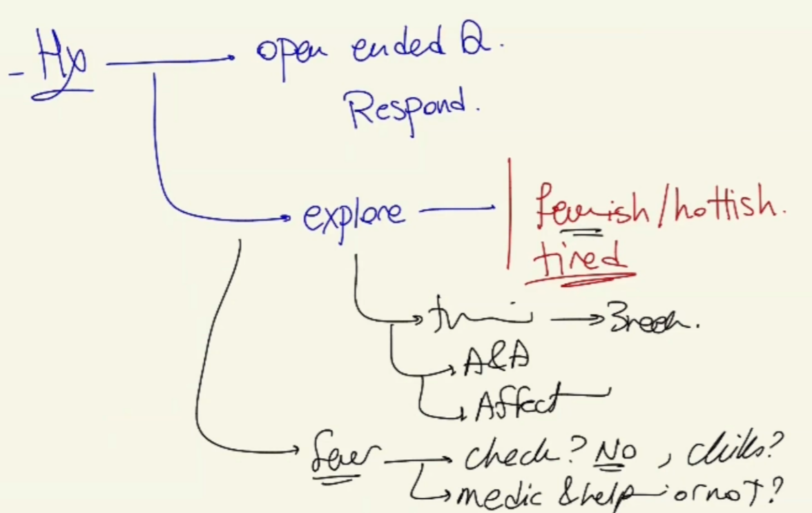
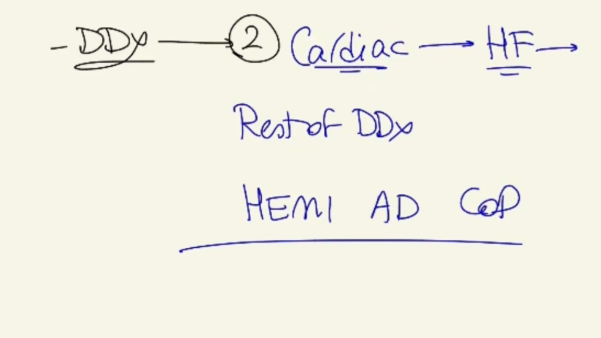

Source: Dr. Amir workshop — Med workshop 2 - 2026 / CLASS 4 TIREDNESS (Aug 2026 drop) · Specialty: general_practice
Open with introduction and an open-ended question (“How can I help you today?”). The patient reports tiredness and worry. Acknowledge the concern and explain you will ask questions to find the cause and make a plan.
Explore tiredness: clarify meaning (low energy, sleepy, feverish), timing (about 3 weeks), alleviating/aggravating factors and effect on daily life. Finding: feeling tired and feverish/hot.
Explore fever: temperature checked? (no) chills? medication taken and helping?
Childhood murmur: when diagnosed (childhood), what the problem was (patient does not remember), any treatment — remembers taking antibiotics for a long time (suggesting rheumatic fever / rheumatic heart disease and secondary prophylaxis), follow-up (none, stopped in childhood).
Cardiac complications: chest pain, shortness of breath (especially exertional), leg swelling.
Rheumatic fever: recurrent sore throats.
Infective endocarditis triggers (most important part): recent dental procedure — root canal about 3 weeks ago; IV drug use — no.
Rule out differentials before time runs out: malignancies, other infections; then HEMIADCOP if time remains.
General appearance: no cachexia, no rashes. Vital signs: febrile. Lymph nodes: no lymphadenopathy. Thyroid: normal.
Cardiovascular (core examination): perform a detailed CVS rather than stopping at “are S1 and S2 normal”. Inspection: no visible/displaced apex beat, no raised JVP. Auscultation: S1 and S2 normal; a murmur is present — characterise it: rumbling in character, best heard at the mitral area (5th intercostal space, mid-clavicular line) = a mid-diastolic rumbling murmur (mitral stenosis).
Continue with respiratory and abdominal examination and office tests (BSL, urine dipstick). Peripheral stigmata: no Janeway lesions, no Osler nodes, but splinter haemorrhages present.
Findings: fever, childhood murmur, long-term childhood antibiotics, no follow-up, recent root canal, mid-diastolic rumbling murmur (mitral stenosis), splinter haemorrhages.
Diagnosis: infective endocarditis. Explain to the patient that there is an infection on a heart valve (mitral) that was likely damaged by childhood rheumatic fever; after the dental procedure bacteria entered the bloodstream and attached to the damaged valve.
Pathophysiology chain: childhood murmur → long-term antibiotics → rheumatic fever → mitral stenosis → dental procedure (root canal) → bacteraemia → colonisation of damaged mitral valve → infective endocarditis (fever + tiredness + splinter haemorrhages).
Cardiac: heart failure (less likely — no leg swelling, no significant SOB, no chest pain).
Other infections: pneumonia, UTI, other infections.
Malignancies: leukaemia, lymphoma, other cancers.



Reviewed by: history-taking-expert (Australian clinical supervisor) · fact-checked against the irStudy medical textbook RAG index.